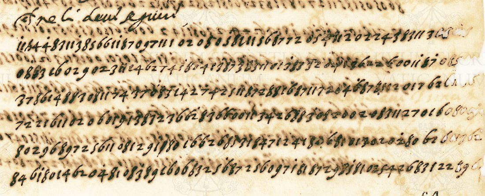
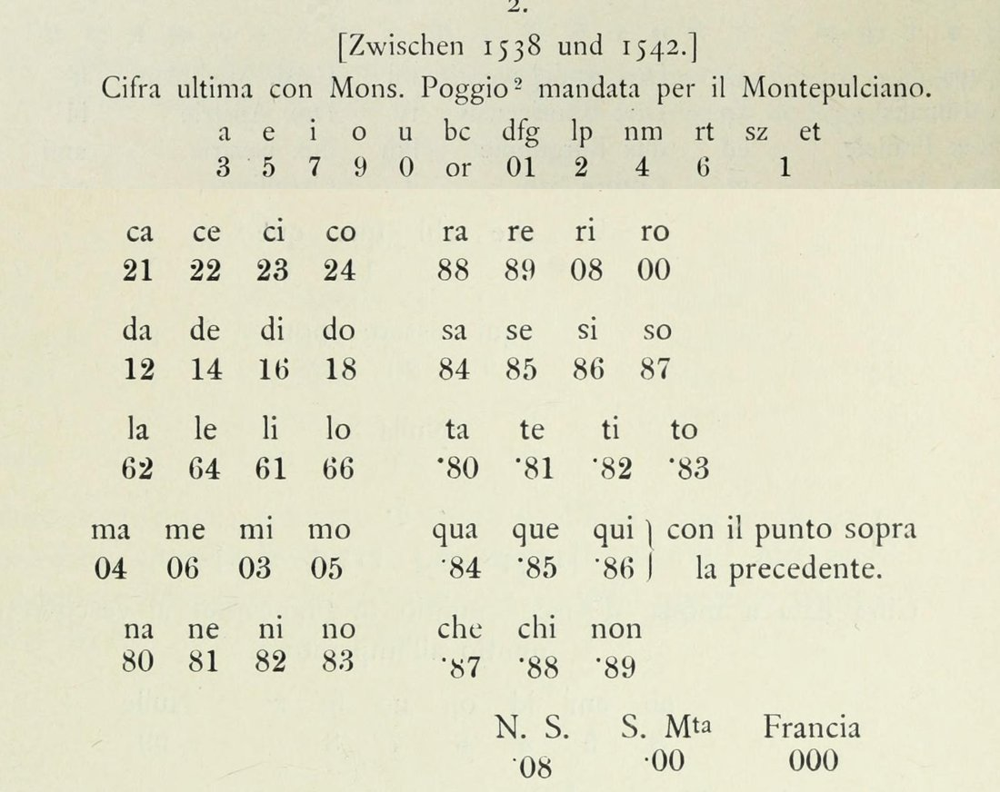

. Wikimedia Commons, public domain.")

At a glanceExternal key matched · partial (76% of the cipher)
- The letter
- Cardinal Alessandro Farnese in Rome to Giovanni Poggio, bishop of Tropea and nuncio with Charles V, dated “a qui 1[.] di Xbre” 1541. Clear lines on the legates, the war, the diet and Buda frame two and a half pages of figures.
- Where
- Archivio Apostolico Vaticano, Segreteria di Stato, Spagna 1A (IA-1), ff. 64r–66r. DECODE record R91, catalogued as not deciphered; catalogue entry 262.
- The cipher
- One or two figures per sign. Each consonant figure stands for a group of letters (2 = l or p, 6 = r or t), syllables have two-figure codes, a dot marks a second set of codes, and 11 is a null.
- How it was deciphered
- The key is no. 2 in Aloys Meister’s 1906 edition of papal ciphers, “the last cipher with Mons. Poggio”. Read polyphonically and corrected in five places on the letter, it gives Italian at once. The reading was then measured digit by digit against an image re-read.
- What it says
- The Emperor wants the Pope to brand the King of France the Turk’s ally. Farnese answers that the Pope will join against the Turk with all his forces, but a declaration would ruin the authority he needs: “niuno altro rimedio si trovarà che non conduchi finalmente a la morte, salvo la pace”.
- Still open
- 710 figures: corrosion holes and a corroded block on f. 65r, three codes not in Meister’s table, and clear runs that spell nothing under the key.
01 The letter and the key
Spagna 1A is the volume of Farnese’s letters to the nunciature in Spain. The letter at ff. 64r–66r opens in clear on the deputation of two legates and the Pope’s refusal to commit himself in the war. It turns to figures at line 16 of f. 64r and stays in figures to the foot of f. 65r. It closes in clear on f. 66r: “a qui 1[.] di Xbre … Come fratello Il Car. Farnese”. DECODE holds its five page images and a digit transcription made in 2020 (record R91, “Spain IA-1”). The letter bound after it, of 15 April 1542 (R92), is Part 5 of the Vatican Challenge. Simon Klee solved that one in 2026, in another key; it has its own page.

Aloys Meister printed four Farnese-era keys from the Argenti collection in the Chigi library (Chigi M II 49). His key no. 2 is headed “Cifra ultima con Mons. Poggio mandata per il Montepulciano” and dated between 1538 and 1542. Lasry, Megyesi and Kopal had tried “Meister’s Poggio key” on this letter without success. Read with each figure standing for one letter, it gives nothing. Read polyphonically, as its own layout says (the figure 2 under “lp”, 4 under “nm”, 6 under “rt”), it gives Italian from the first lines: la qualità de la materia, nondimeno perché…

02 The cipher as the letter uses it
Vowels have one figure each: a 3, e 5, i 7, o 9, u 0. Consonant groups have one figure or one pair: b/c 02, d/f/g 01, l/p 2, n/m 4, r/t 6, s/z/et 1, and c also 8. The syllables have two-figure codes in alphabetical order: ca 21, ce 22, ci 24, co 26; da–do 12, 14, 16, 18; la 62, le 64, li 61, lo 66; ma 04, me 06, mi 03, mo 05; na–no 80–83; ra 88, re 89, ri 08, ro 00; sa–so 84–87. With a dot over the figure before them (sometimes over their own first figure), 80–83 are ta–to, 84–86 qua–qui, 87–89 che, chi, non, 08 N.S. and 00 S. M.tà. Francia is 000. The pair 11 is a null, set 172 times at word and clause ends.
Five departures from Meister’s print were found on the letter and tested on the whole of it. The misprinted “or” is 02 (potrebbe, sarebbe, bisogno). The figure 1 is s, z and et. The null is 11. Ci is 24 (cioè, medicina, iudicio), and co is 26, a code Meister does not print, which explains the recurring 2606 come and 260626 l Turco. Every other syllable family keeps Meister’s order: each of its 24 possible orders was scored, and the printed one wins.
03 What Farnese says
The letter answers a report of Poggio’s from the imperial court, in the weeks after Charles V’s failed expedition to Algiers (October 1541). Through the Cardinal of Burgos and others, the Emperor has asked that the Pope “si dichiari in aiuto dell’Imperatore”. Farnese could say a great deal in reply, but Poggio knows the reasons himself. The Emperor may be sure “che l’animo di N.S. sia prontissimo a far per lei tutto […] che il grado et onor suo permetterà”. That is not so of the declaration asked of him now.
The Emperor and the King are at odds, and Christian princes are divided. What is asked amounts to giving the King of France a name, “cioè come persona che abbia inteligenza con el Turco et lo conduca a dani di cristiani”. That would need “la condenatione, il che mal si può”. People would say the Pope moved “più tosto per rispeti particolari che per [il] publico”. Against the Turk, on the other hand, the Pope is ready “di concorrer con tute le sue forze a la difesa o ofesa, in qualonque loco si sia”, and to stake “la uita quando bisogni”.
A declaration would also do the Emperor evident harm. Any loss of the Pope’s reputation or authority would leave him less able to help “così ne la pace come ne la guera”. It would give others the occasion “di levarsi da la obedientia de la Sede Apostolica” and open to them “la strada di ocupar li beni de le chiese, come ha fato Ingiltera et luterani”. France is named next, with money for the war against the Emperor. The Pope will send what help he can against “le forze de l Turco, o sole o acompagnate”.
04 The close
The last six lines of f. 65r turn back to the peace. They read almost without a hole:
… secondo che la iudicherà convenirsi; ancorché non avendo riperduto in tuto la speranza di qualche concordia per l’opera de li doi legati, come di sopra, […] Lucca sarebbe stata medicina contraria. […] sorte di dechiaratione, che et l’avessero […] come […], se sono per se steso. Ma in soma niuno altro rimedio si trovarà che non conduchi finalmente a la morte, salvo la pace.
… as she shall judge fitting; although, not having wholly lost the hope of some agreement through the work of the two legates, as above, […] Lucca would have been a contrary medicine. […] kind of declaration, which even if they had it […] In short, no other remedy will be found that does not lead in the end to death, except peace.
Lucca is the meeting of Paul III and Charles V in September 1541. The declaration Charles wanted there would, in Farnese’s words, have been a medicine that made the illness worse.
05 Method
Transcription. DECODE’s transcription has no dots. It also skips cancelled figures and figures at corrosion holes. Every cipher line was re-read against the 400 dpi images: 2,965 figure positions, about 15 firm or probable corrections, 12 struck passages and 136 certain dots. Of those dots, 83 stand before an 8 and 9 before a 0, which is Meister’s rule for the dotted codes. A second, key-guided look at every unread stretch changed seven more figures where the glyph allows the one the sense needs. It refused every change the glyph does not allow.
Decoding. Because one figure stands for several letters, the key cannot be applied mechanically. A search over the ways of dividing the figures into codes, scored by a five-gram model of sixteenth-century Italian, proposed the division and the letter for each code. The reading was then made by hand, sentence by sentence, from those proposals and from the images.
Measurement. The reading, in the clerk’s spelling, is aligned figure by figure with the transcription
(align91.py). A word counts as read only if the key spells it from those exact figures; one-figure emendations
cost a penalty and are listed. Of 2,965 figures, 2,025 (68.3%) are certain words or nulls, and 2,261 (76.3%) with uncertain words and
15 one-figure emendations. Twelve of those emendations sit on figures the re-read doubts, three on sense alone.
Third pass. A crib tester and a dictionary lattice of 30,000 sixteenth-century word forms were run over every unread stretch. They found Francia = 000, which Meister prints but the earlier passes had missed: “sono a l Francia nome” (64v.8) and “de Francia” (65r.8). They also found la condenatione (64v.11), on an overwritten pair the re-read had taken for a cancellation. Nine readings that fit the sense were refused, because each needs a figure the image shows clearly to be another. The strongest is e travaglio at 65r.1, where the sign is corroded.
Controls. Meister’s key no. 1 for the same nunciature gives nothing on this letter (−4.12 nats per character). A free annealing search for the whole key was run on the companion letter IA-2, where Klee’s key gives −9. Its best key scored −785.6, so a key found without the printed table could not have been trusted.
06 What remains open
- Illegible: corrosion holes along the right edge of f. 64r and at the line ends of f. 65r (about 45 figures); 64v.12 pos 1–15 and 64v.13 pos 1–4, ink-burnt; 65r.15–18, where corrosion runs through almost every sign (about 140 figures); the corroded starts of 65r.10 and 65r.12–13.
- Codes not in Meister’s table: 4 0, where S. M. is wanted (64v.2); 2 6 where di is wanted (64v.2, 64v.22); and 23, which occurs 19 times with no value clearly better than another.
- Clear runs that spell nothing under the key: stretches on 64r.16–19, 64v.4–21, 65r.1–4, 65r.8, 65r.13, 65r.21–22. The figures are sharp; they are either the clerk’s slips or codes outside the printed table. Only the decipherment made at the time, or the key sheet itself, would settle them.
- Doubtful readings are marked [?] in the reading file (210 figures): among them l before Francia at 64v.8, grose at 65r.9, se[.]de at 65r.6 and sperino at 65r.15.
No edition of Farnese’s December 1541 letters to Poggio has been found. If the decipherment made at the time survives, it would be in the registers of the Spanish nunciature or the Carte Farnesiane in Naples.
Full texts
The transcription and the decryption of every document on this page, so that the reading can be used and checked. Short files are shown here; all are in the repository.
Farnese to Poggio, Dec 1541 read in part
Farnese answers for Paul III the Emperor's demand that the Pope declare against France after the Algiers campaign: the Pope will do all his rank and honour allow and join against the Turk with all his forces, but branding the King of France the Turk's ally would need a condemnation he cannot give, would cost the Holy See the reputation it needs, and would push others to leave its obedience and seize church goods as England and the Lutherans did; hope rests on the two legates, and no remedy but peace.
Builds coherent sentences, but under the read bar of 95% of words read as sense (68% here); the holes are marked in the reading.
Transcription
# 64r (IMG_R91_I682_P1.jpg) cipher lines 16-21 re-read vs ../../r91/r91_cipher.txt (DECODE transcription); ^ = dot above, [ ] = struck, ? = uncertain 16: 1^ 1 6 4 4^ 8 3 1 1 3^ 8 5 6 6 1 1^ 8 7 0 9 7 1 1 1 0 2 0 8 0 5^? 8 1? 1 1 5? 6^ 8? 7 7 2 8 5 4 1 1 2 0 2 2 4 3^ 8 3 1 1 3 ? ? DIFF: 3:7->6 | 33:8->1 | ADDED 5? between 34 and 35 | dots over 1 (1^), 5 (4^), 10 (3^), 16 (1^), 50 (3^, short dash-like mark) | 36: 8 could be 6 | ADDED ? ? at end: 2-3 digits after the final 3 eaten by ink-corrosion holes | wide gap after 39 is empty paper, nothing struck | KEYCHECK 2026-11-05: 32:2->1? (the sign after the 8 is the L-shaped stroke with a foot to the right and no top bar, the sign read 1? at 64r.18 pos 22 and 64r.21 pos 20, not the z-shaped 2 of pos 26 and 47; gives 8 1 = te in scriue-te) | dot over 36 (6^: a crisp dot above the loop of the 6 at x 1815, y 2580, clear of the 8's head; gives 87 = che in et che il) | possible dot over 30 (5^?: a dark blob up-right of the 5 at x 1645, y 2587, which may instead be the entry stroke of the 8's top loop) NOTE: pos 3 has a tall stem with a bottom loop (6), no top bar (7). pos 7 kept as 3: its entry stroke rises from the lower left (the 3 form); the 7s on this page have a short flat top bar. pos 33-35: the image shows 2 | 1 | 1 | s-shaped 5 | 6 where the transcript has 2 8 1 6. 17: 0 8 8? 3 1 6 0 2 9 0 2 3 1 1 2 4 6 2 7 4 5^? 8 0 4 8 3 8 7 3 8 1 7 0 1 3^ 8 3 3 2 3 [9? 1? ?] 6 2 2 6 0 0 1 1^ 8 7 DIFF: 3:6->8? | dot over 35 (3^) | dot over 48 (1^) | possible dot over 21 (5^?, may be the detached head of the 5; ink corrosion here) | between 40 and 41: 3 signs not in the transcript, smeared/blotted and looped over (looks cancelled) [9? 1? ?] | wide gap after 39 is empty paper NOTE: pos 3 is narrow with a loop at the top like the 8 before it, not the tall rising-stem 6. The cancelled group (x 2100-2220) is an oval with a long tail down-left (9 or a cancel loop), a short stroke, and a dark smeared mass; a small spatter of dots sits above it. The transcript's "3 6 2 2 6 0 0" matches the crisp signs on either side, so the transcriber skipped the blot. 18: 3 7 8 6 1 4 8 8 3 0 8 1 1 7 4 3 7 0 8 3^ 1? 4 2 7^^ 4 2 5 1 1 8 7 2 8 8 1 6^ 8 7 1 1 7 2 0 4 6^ 8 7 8 . [1? 1?] 2 0 1 7 6 2 ? ? ? DIFF: dot over 20 (3^, a short horizontal dash) | DELETED 21 (2): only one sign stands between the 3 and the 4, an L-shaped stroke with a foot to the right, which DECODE reads as 1 elsewhere (64r.21 pos 20) and is kept as 22 = 1? (could be a 2); the transcriber's extra 2 may be the dash above the 3 | two dots over 25 (7^^, side by side above the top bar) | dots over 37 (6^) and 46 (6^), placed above the loop of the slanted 6 | dot below the baseline after 49 (.) | at the wide gap after 49: 2 signs not in the transcript, smeared and pale, like 1 1 joined at the top, probably cancelled [1? 1?] | ADDED ? ? ? at end: after the final 6 2 the paper is eaten by ink-corrosion holes over about 4 digit widths; ink rims of 2-4 lost digits | wide gap after 53 is empty paper 19: 7 2 2 1 6 1 1 0 2 0 6 0 1 9 1 3 8 7 2 3 6^ 6 2^ 8 3 6 6 0 0 1 6^ 3 4 2 6 8 8 3 0 8 2 0 0 2 0 8 3 1 1 2 7 0 1 6 0? 8? 0? 9? ? DIFF: dot over 21 (6^, above the loop) | dot over 23 (2^) | 31:1->6^ (tall stem with a loop on its right, the same b-shaped sign as 64r.16 pos 3, with a dot above-left like the other dotted 6s) | ADDED 0? 8? 0? 9? ? at end: after the final 6 the next 4-5 digits are eaten by ink corrosion, but the holes keep their outlines (0, a two-loop 8, 0, a 9 with a tail, one more); a small corroded hole above the last ones may be a dot | wide gaps after 2 and 9 are empty paper 20: 8 0 2 9 6 8 9 7 2 5 6 1 1 0 8 1 2 9 1 / 8 0 1 6 6^? 2 6 8 5 3 1 8 4 7 1 2 4 1 8 0? . 6^? 8 0 1 3 0 2 0 2^ 8 0 6 2 6? 0? ? 6? 2? DIFF: ADDED '/' after 19: a heavy slanted stroke, twice the weight and length of a 1, with a dot under its foot, between 9 1 and 8 0 (a separator or a cancelling stroke; the transcript gap after 19 falls here) | possible dot over 24 (6^?; a crisp dot between the tops of the two 6s) | ADDED 0? after 38: an oval sign between the s-shaped 8 and the tall 6, with a dot below the baseline (.) | possible dot over 39 (6^?; small dot just off the tip of its ascender) | dot over 47 (2^) | ADDED 6? 0? ? 6? 2? at end: after the final 6 2 about five digits are lost to ink-corrosion holes; only the hole outlines remain | the transcript gaps after 9, 13, 17, 21, 38, 40, 49 are ordinary spacing, nothing struck 21: 8 4 6 1^ 8 0 1 4 6 2 0 4^ 8 1 0 8 3^ 8 9 1? 6 0 6 8 3 2 5 6^ 8 7 2 5^ 6 0 9 7 1^ 8 1 8 7 2 9 8 3 8^ 1 0 2 5 4 2 6 8 3 1 2 2 8? 9 6? DIFF: dots over 4 (1^), 12 (4^), 28 (6^, left of the ascender tip), 32 (5^), 37 (1^), 46 (8^) | mark over 17 (3^: a small v-shaped tick in dark ink just above the 3) | 20: the 1 is L-shaped with a foot to the right (same sign as 64r.18 pos 22), kept as 1? | ADDED 8? 9 6? at end: after the final 2 2 an 8 with a corroded centre, a clear 9 with a long tail, then a corrosion hole with the outline of a 6 (or 0) at the torn edge | wide gaps after 14 and 30 are empty paper
Transcription
# 64v (IMG_R91_I683_P2.jpg) cipher lines 1-22 re-read vs ../../r91/r91_cipher.txt (DECODE transcription); ^ = dot above, [ ] = struck, ? = uncertain
1: 8 8 0 1 7? 9 8 2 8^ [6? 4 ? 4? 8 8 0 9? 7 4] 1 0? 2^ 6 4 . 6 8 8 0^ 8 9 1 1^ 8 9 0 3 5 8 1 2 2 1 8 4 0 1 9 1 1 8 9 2 6 1 2 1 6 6 4 8 1
DIFF: 5: the 7 could be a z-shaped 2 (its foot joins the 1) | dot over 9 (8^, above-left) | after 9: a cancelled stretch of about 9 signs (x 790-1080) skipped by the transcriber, crossed by long horizontal strokes and smeared [6? 4 ? 4? 8 8 0 9? 7 4]; the transcript gaps around the lone 8 at pos 9 mark it | ADDED 1 0? 2^ after the cancelled stretch, crisp and apparently not cancelled (a 1, a small round sign, a z-shaped 2 with a dot above) | dot on the baseline after 11 (.) | dot over 15 (0^) | dot over 19 (1^)
NOTE: the cancelled stretch repeats the shape of the following "6 4 6 8 8 0 8 9", so the scribe seems to have started this group, cancelled it and rewritten it. If "1 0? 2" is in fact part of the cancellation, drop it.
2: 0 5 8^? 3^? 3 6 6 4 0 1 9 1? 1 2 0 9 0 2 5 4^ 4 0 2 2 8 4 8 9 3 3 1 8 6 0 2 0 8 8 6 8 6^ 8 7 6 2 8 2 0 5 2 6^? 0 8 8 6 3 2 0 0
DIFF: 3: the 8 is partly lost in a corrosion hole; a dot above it (8^?) | short dash above 4 (3^?); 4 is an s-like looped sign, could be 8 | 12: X/Y-shaped sign (two strokes crossing), kept as 1, could be 4 | dot over 20 (4^) | dot over 41 (6^, just above the tip of the ascender) | possible dot over 51 (6^?, a blob at the top of the ascender) | wide gaps after 2, 5, 8, 20, 35, 45, 57 are ordinary spacing, nothing struck
3: 4^ 8? 2 1 8 6 0 5 1 1 3 0 1 3 6 2 5 6 6 4 7 6 0^ 8 3 5^ 6 6^ 8 7 7 2 0 1 8 8 1 8 1 9 8 3 6 1 0 9 1 1 7 2 5 6 0 6 8 1 8 8 6 2 8 4
DIFF: dot over 1 (4^) | dot over 23 (0^; sits between the 0 and the tall 8, nearer the 0) | dot over 26 (5^; the 5 is a heavy downstroke with an s-flourish) | dot over 28 (6^, just off the tip of the ascender) | 2-3: the "8? 2" pair is blotted (a corrosion pinhole in the 8) but not struck | digits otherwise confirmed; wide gaps after 1, 25, 48, 58 are ordinary spacing
4: 2 6 8 4^ 8 9 5^? 7 4^ 8 5 1^ 8 0 1 6^ 8 8 3 8 8^ 8 2 9 8 1 8^? 7 8 5 6 1 1 6 0 4 4 1 2 1 6 2 8 9 8 5 4 8 1 2 6^ 7 2 6 4 8 6 1 4 8 8 4
DIFF: dots over 4 (4^), 9 (4^), 12 (1^), 16 (6^, off the ascender tip), 21 (8^) | possible dot over 7 (5^?; an upright tick above-left of the 5) | dot between 26 and 27 (put on 27, 8^?; may belong to the 1 at 26) | dot over 51 (6^) | 29: a bottom loop with a heavy filled upper stroke, kept as 8 (could be 6) | pale grey smears above 47-50 are offset/bleed, not a cancellation | digits otherwise confirmed; wide gaps after 39, 41, 50 are ordinary spacing
5: 4? 8 8? 6 6 6 7 4 2 5 8 8^ 8 3 6 1 7 2 8 9 1 1 2 6 0 6 1 8 7 2 0 8 4 2 4 2 7 0 2 0 8 1^ 8 [3? 4? 4?] 1 6 1 2 6 6 1 6 7 4
DIFF: ADDED 4? at the start: a cross-shaped sign (horizontal bar, slanted stem) before the first 8, in the same dark ink | 2: the second 8 is an open two-stroke sign like a 4 or Y, kept as 8? | dot over 11 (8^) | dot over 41 (1^) | after 42: the transcript gap holds a smeared, overwritten group [3? 4? 4?] (x 2065-2170), with a tissue repair over the paper just before it (x 2005-2060) and a long stroke from line 4 running through it; looks cancelled | 13: kept 3 (entry stroke from the lower left, the 3 form)
6: 6 8? 3? 6 0 0 1 1 8 5 4 1? 3 7? 2 6 8 8 0 3 1^? 8? 2 9 8 1 1 6 7 4 0 1 7 1 4 6 1 0 8 5 0? 5 4 2 8 [? ?] 9 2 6 4 0 8 1 3 3 4
DIFF: 2-3: tangled pair with a corrosion pinhole, kept 8? 3? | 5:6->0 (a round 0 with no ascender, the same as the 0 after it) | 12: a t-shaped 1 with a cross stroke (could be 4) | 14:3->7? (a top bar and a straight diagonal, no lower bowl) | dot above 21/22 (put on 21, 1^?) | 22: tall sign with a lower loop, kept 8 (could be 6) | 41:8->0? (closed oval) | after 45 (the transcript gap): a dense smeared group of about 2 signs, apparently cancelled [? ?]
7: 0 2 7 1 8 7 . 1 1 8 9 7? 0 9 3 0 5 6 2 0 8? 3 2 5 6 3 0 3 2 6 1 6 2 2 6 0 0 2 5 6 8 3 0 3 2 6 1 1 8^ 4 4 0? 8? 1? 4 2 6
DIFF: dot below the baseline after 6 (.) | 11: a 7 with a short crossbar through the stem (could be 4) | 20: an upright stroke with a crossbar and a detached tick above, kept 8? (could be a dotted 1) | dot over 48 (8^, large, clear) | 51: where the transcript has one 3, the page shows three pale signs, a small oval, an s-shaped 8 and a short upright stroke (0? 8? 1?) before the final 4 2 6 | wide gaps after 11, 30, 49, 50 are ordinary spacing, nothing struck
8: 9 9 7 2 8 9^? 6? 6 2 6 4 8 6 1 4 0 8 1 1 8 7 8 3 3 2 0 0^? 0 8 3 0 6 2 4 9 5 2 6 0 6^ 2 5 6 8 7 8 0 6^ 7 3 0 2 7 3 7 4^ 8 1
DIFF: 7:8->6? (an oval with the stroke rising from the right, no upper loop) | possible dot over 6 (9^?) | possible dot high above 27 (0^?) | dot over 40 (6^) | dot over 48 (6^) | dot over 56 (4^) | 1-6: the opening group is heavily inked and bled; digits kept as transcribed | no gaps, nothing struck
9: 6 1 0 1 5 4 1 3 2 6 4 5 2 6 0 6 2 6 1 1 5 . 6 6? 6? 2 6 4 0 1 0 2? 1 3 1 2 8^ 2 1 6 0 2 0 8 1 8^ 2 8 2^? 8 0 4^ 8 3 8^? 7 2 5 6
DIFF: dot at mid-height after 21 (.) | 23-25 "6 6 2": heavily blotted/smudged (the transcript gap after 22 and after 25 bracket it); signs readable underneath, probably not cancelled | 31: a small t-shaped sign with a crossbar, kept 2? | dot over 36 (8^) | dot over 45 (8^) | possible dot over 48 (2^?, above its right end) | dot over 51 (4^) | possible dot over 54 (8^?, between the 3 and the 8) | the thin stroke at the gap after 46 is the descender of a 7 in line 8, not a sign of this line
10: 8 5 1 8 3 0 6 0 8^ 8 2 1 6^? 5 1 8 5 6 1 4?^ 0 8 3? 6 0 6 8 2 7 0 1 6 [1?] 2 1 1 2 0 8 2 8^ 3 5 2 5 6 8 3 0 1 0 7 8^ 0^ 8 3 2 6 4
DIFF: dot over 9 (8^) | short arc above 13 (6^?, a breve-like stroke over the bowl) | 20:7->4? (a closed triangle with a crossbar) with a dot above it | 23:2->3? (top bar, kinked downstroke with a lower bowl) | between 32 and 33: a pale L-shaped stroke (a 1 with a foot, the upright faded as if scraped) [1?] | dot over 40 (8^) | dot over 52 (8^) | dot over 53 (0^) | an interlinear blot shaped like a pi sits between lines 9 and 10 above 3-5, not counted | wide gaps after 28, 32, 36 are ordinary spacing, nothing struck
11: [1? 4? ?] 2 6 0 3 1 1 0 2 7 8 7^ 0 1 8 3^ 8 7 3 8^ 5 1 8^ 3 2 8 9 2 2 1 2 6 2? 2? 6 4 1 4 8 0 8 2 9 8 1 7 2^ 8 7 0 4 2 8 6 2 0 9
DIFF: before 1: a dense blot of about 3 signs with a loop drawn under it (x 420-510), apparently cancelled, not in the transcript [1? 4? ?] | dots over 11 (7^), 15 (3^), 19 (8^), 22 (8^), 46 (2^) | 32-33 (the "2 2" either side of the transcript gap): one dense smeared and overwritten group (x 1610-1695), looks cancelled [2? 2?] | otherwise digits confirmed | THIRD PASS 2026-11-05: the overwritten group at 32-33 is restored as live 2? 2? (DECODE reads 2 2 here; at 4x the group ends in a clear z-shaped 2 written over an earlier sign, a correction rather than a cancellation); with it 6 2 2 6 4 1 4 8 0 8 2 9 8 1 = la condenatione ('preceda la condenatione')
12: 3? 1? 4? 1? 8? 3? 4? 2^? 6? 8? 6? 2? 2? 6? 8? 4 7 4 5 8 5 5 9 1 1 8 1 7 4^ 8 1 6 0 3 8 1 8 7^ 8 9 8 6 2 9 0 8 4 8 1 .?
DIFF: 1-15 (x 390-1340) UNRESOLVED: the opening third of the line is ink-burnt and holed by corrosion (holes at x 390-440 and 735-790 keep only their outlines); the page shows more stroke-groups here (about 20) than the 15 digits transcribed, but the burn splits single signs so the count cannot be fixed; all 15 kept with ? | dot at x 665 (over about 8, put on 8 as 2^?) and a dot at x 780 just after the second hole | dot over 29 (4^) | dot over 38 (7^) | possible dot on the baseline after the final 1 (.?) | from 16 (the crossed 4 at x 1345) to the end the digits are confirmed; the transcript gaps after 10 and 12 fall in the burnt stretch
13: 6? 2? 2? 3? 8 0? 4? 1 1 4 2 8 9 1 1 5 6 0 1 3 0 2 5 4^ 1 9 8 6 6 4 8 9 0 2 5 2 1 0 1 7 9 8 1 8^ 7 3 2 8 0? 1 8 7 6 1
DIFF: 1-4 UNRESOLVED: the line opens with a faint, smeared cluster (x 466-566: z, u/4 and x shapes; may be cancelled), then 1 with a dot above (x 592), an oval with a tail (9?), 1, 2, a large looped 6 and a 2, before the 8 (x 810-860) = pos 5; the transcript's "6 2 2 3" cannot be matched one-to-one, kept with ? | ADDED 0? 4? between 5 and 6: an oval and a crossed x/4 (x 870-935) sit between the 8 and the pair 1 1 | dot over 22 (4^, large) | dot over 42 (8^) | ADDED 0? between 46 and 47: an oval holed by corrosion (x 2385-2410) right after the 8; this is the transcript's gap after 46
14: 2 9 2 0 6 1 9 0 1 8 2 8 5 4^ 8 1 4 1 2 7 6^ 0 8 3 0 5 8 0 0 2 5 8 9 5 7 6 6 2 9^? 8 8 8 6 0 4 1 1 0? 8? 7? 2? 1? 2 4 3 0 4 2 9
DIFF: dot over 14 (4^, above the crossed 4) | dot over 21 (6^, at the tip of the ascender) | possible dot over 39 (9^?) | ADDED 0? 8? 7? 2? 1? between 47 and 48 (x 2080-2270, the transcript's gap): five signs whose centres are eaten by corrosion holes, only the inked rims remain (an oval, a holed 8, a T-shaped 7, a holed sign, a holed upright); the transcriber skipped them | 1-12: heavily inked and bled, digits kept as transcribed
15: 6 8 9 0 . 2 5 1 1 2^ 2 6^ 8 3 0 8 6 1 1 5 0 1 5 8 3 2 6 4 6^? 8 8 0 8 9 1 1 7 4 8^ 1 6 2 8 9^ 8 0 1 8 0 4 0 1 5 4^ 8 2^? 8 7 0^? 8
DIFF: dot below the baseline after 4 (.) | dot over 9 (2^) | dot over 11 (6^, at the ascender tip) | possible dot over 28 (6^?) | dot over 38 (8^) | dot over 43 (9^) | dot over 53 (4^) | possible dot over 55 (2^?, between the 8 and the 2) | possible dot over 58 (0^?) | 47: the sign after the 1 is holed by corrosion, kept 8 | 1-35: heavily inked and bled; digits kept as transcribed | wide gaps after 9, 25, 27, 48 are ordinary spacing, nothing struck
16: 8 6 0 5 0 5 1 8 5 1 1 2 7 0^ 8 7? 1^ 8 3 2 5 6 0 8 1 2 5^? 8 2 2 3 6^ 8 2 2 6 6 2 0 8^? 8 7 2 5 6 7 4 8 1 3^? 9 1 8 5 2 0 0 2 6 1 2 6
DIFF: dot over 14 (0^) | 16:3->7? (top bar and a straight diagonal, no lower bowl) | dot over 17 (1^; the 1 is L-shaped with a foot) | dot over 27/28 (put on 27, 5^?) | dot over 32 (6^) | possible dot over 40 (8^?) | 50: the sign has a dot on top (3^?, could be a dotted 1) | the final 6 sits in a corrosion stain | after the end, at x 2620-2800, a pale blurred group (about 4 signs) is set lower than the line; it looks like bleed/offset, not this page's ink, and is not counted | wide gaps after 29, 35, 42, 54, 58 are ordinary spacing, nothing struck
17: 8? 7 4? 1 8^? 0 0 2 5 4 8 2^ 8^ 4 4^ 8 3 3 6 2 [4? 8?] 2 3 6^ 8 1 1 4 2 6 0 6 2 . 6 1 1 0 8 5 8^? 9 8 7 6 6 1 6 1 2 9 1 8^ 0 1 1 0 4 0 3 4
DIFF: 1:0->8? (a crossed x-like 8) | 3:3->4? (a 4 with a long crossbar and a descender) | dot over 5 (8^?, may belong to the 1 before it) | dots over 12 (2^), 13 (8^), 15 (4^) | between 20 and 21 (the transcript gap): a crossed 4 and a tall 8-shape cut through by a long horizontal stroke, probably cancelled [4? 8?] | dot over 23 (6^) | dot below the baseline between 32 and 33 (.) | possible dot over 39 (8^?) | dot over 51 (8^, at the top of its ascender) | 55: the 0 is holed by corrosion; 57: the 0 after the transcript gap is pale | 1-10: heavily bled; other digits kept as transcribed
18: 0 2^? 8 9 3 8 1 8 9 1 6 2 6 4^? 2 6 6 8 9 6 1 1 2 6 4 6 0^? 8 1 6 4 1 0 5 0 1 9 6 1 5 1 1 3 6 2 1 6 0 1 5 8 4 9 9 0 1 5 8 4 8^
DIFF: possible dot over 2 (2^?) | possible dot over 14 (4^?, above the crossed 4) | possible dot over 27 (0^?) | dot over 60 (8^, the last 8, which is pale and partly corroded) | 1-25: heavily inked and bled, glyphs merge; digits kept as transcribed, no change could be established | the transcript gaps after 4, 12, 15, 16, 25 are ordinary spacing, nothing struck
19: 3 2 2 1^? 6 0 3 6 7 4 2 6 4 2 2 8 2 9 1 6^ 0 0 1 1 5 7 4^? 8 4 6 6 4^ 8 7 6 6 2 6 8 6 8 6 3 1 1 5 6 1 1 5 1 2 9 8 1 6 0 7 2 0
DIFF: possible dot over 4 (1^?) | dot over 20 (6^) | possible dot over 27 (4^?) | dot over 32 (4^, above a crossed 4) | 1-33: heavily inked and bled, the crossed 4s and 7s merge; digits kept as transcribed | from 34 to the end the digits are confirmed; the final 0 is half lost in a corrosion stain | wide gaps after 2 and 29 are ordinary spacing, nothing struck
20: 4^ 8 0 0 6 4^ 8 1 6 1 0 2 3 0 2 0 2^? 8 0 7 4^ 8 1 8 9 1 1 5 6 6 2 0 7 8 0 8 4 4 1 8 0 2 7 8 7 0 1 8 2 6 1^ 8 4 2 2 6 8 4
DIFF: dot over 1 (4^) | dot over 6 (4^, above the crossed 4) | possible dot over 17 (2^?) | dot over 21 (4^) | dot over 51 (1^) | 1-30: heavily inked and bled, the 2/3/7 and 4 forms are hard to separate; digits kept as transcribed | the final 4 is half lost in a corrosion stain | wide gaps after 10, 29, 49 are ordinary spacing, nothing struck
21: 5 7^? 4 8 0 1 8^? 0 4^ 8 2^ 3 6 0^ 8 3 7 2 0 8^? 6 0^ 8 3 5 2 6 0 5 1 8 8 7 1 1 6 6 7 4 2 5 6 1 1 2 9 8^ 1 8 5 0 4 7 0 8 6 8 8 8 9 1 8^
DIFF: possible dot over 2 (7^?, above-left of the z-shaped 7) | possible dot over 7 (8^?, may belong to the crossed sign at 6-7) | possible dot over 20 (8^?, above-left of the tall 6/8 at x 1080-1100) | dot over 22 (0^, the 0 here is small and open) | dot over 47 (8^) | dot over 62 (8^, large, over the final sign) | 1-10: heavily bled; digits kept as transcribed | after the final 8 the line is closed by a long flourish (x 2550-2700) and a small clear-text mark, not digits | wide gaps after 12 and 53 are ordinary spacing, nothing struck | KEYCHECK 2026-11-05: dot over 9 (4^: a crisp dot at x 748, y 3030, over the join of the crossed 4 and the following 8; marks 8 2 = ti) | dot over 11 (2^: a second crisp dot at x 800, y 3020, above the small z-shaped 2) | dot over 14 (0^: a crisp dot at x 931, y 3035, over the join of the 0 and the 8 of the first 6 0 8 3; marks 8 3 = to, as the recorded dot over 22 does for the second 6 0 8 3) | pos 4 rechecked: a tall stroke with a bottom loop (6 or 8), not a 1, so 'in sustantia' (which needs 1 0 1 8 0 4 8 2 3) is not supported
22: 8 4 6 6 4^? 8 5 2 6^? 8 8 3 8 8^ 8 2 9 8 1 1 6^ 0 8 7 4 0 5 . 1 8^ 8 7 7 2 8 8 5 1 4 6 1 1 1 6 2 8 9 8 5 4^? 8 1 2 7 0 7 8 0 4 1 7 1 6^ 8 5 1 8^? 3^ 8 9 .
DIFF: possible dots over 5 (4^?) and 9 (6^?), in the bled opening | dot over 14 (8^; the 8 is narrow) | dot over 21 (6^) | dot below the baseline after 27 (., under the 5/1) | dot over 29 (8^) | possible dot over 49 (4^?, between the 4 and the 8) | dot over 62 (6^) | possible dot over 66 (8^?) | dot over 67 (3^) | ADDED '.' after the final 9: a heavy dot on the baseline, followed by a large clear-text letter (R or a monogram) at x 2640-2760, which closes the cipher | 26: the sign after the transcript gap has a descender (a 9-like 0), kept 0 | 1-12: heavily bled; digits kept as transcribedTranscription: 65r.txt
Decryption
# R91 reading, merged from reading_64.txt and reading_65r.txt (key k2d + dots + Francia 000), third pass 2026-11-05
64r.16 {1 1 6 4 4 8 3} | a que lo | che uoi | scriuete | et che il {8 5 4 1 1 2 0 2 2 4 3 8 3 1 1 3 ? ?}
64r.17 {0 8 8 3} di boca | {2 4 6 2 7 4 5 8 0 4 8 3 8 7 3 8 1 7 0 1 3 8 3 3 2 3} laltro | che
64r.18 {3 7} si dechiari | in aiuto del impe | sopra di che | il marche[?] {8 2 0 1 7 6 2 ? ? ?}
64r.19 il car[?] | burgos {3 8 7} parlato loro di {3 4 2 6 8 8 3 0 8} propria | piu di {0 8 0 9 ?}
64r.20 {8 0} potrei per | risposta dir cose assai dando {0 6 8} faculta {6 2 6 0 ?} la[?]
64r.21 qualita de la materia nondimeno perche per uoi steso potete ben conoscere {6}
64v.1 ragioni {8 1 0} contrario | non mi e necessario | replicarle ne
64v.2 moto[?] a longo | puo ben {4 0} cesarea assicurarsi che lanimo {2 6} ns sia prontissimo
64v.3 | a far per lei tuto {5 6 6} che il grado et onor suo | {7} permetera[?] la {8 4}
64v.4 cosa non e in questa dichiaratione che se li dimanda di presente {2 6 7} considera {4}
64v.5 {4 8 8 6} lo imperator et il re | comesso[?] principi {0 2 0 8 1 8} discordi in
64v.6 {6 8 3 6 0 0 1 1} senza {7 2 6 8 8 0 3 1} tione di infideli {0 8 5} sempre comune {3 3 4}
64v.7 {0 2 7 1 8 7 1 1 8 9 7 0 9} auer luno per amico et laltro per caualli {1 8 4 4 0 8 1 4 2 6}
64v.8 {9 9} il re lo consideri | sono a l[?] francia nome cioe come persona che abbia inte
64v.9 ligenza con el turco | et lo[?] conduca a dani di cristini[?] tanto che per
64v.10 questo meriti di esser de ns a tutti iudica {1 2 0 8 2 8 3 5 2 5 6 8 3 0 1 0 7 8 0 8 3 2 6 4}
64v.11 {2 6 0 3} | bisogno che a questo preceda la condenatione il che mal si puo
64v.12 {3 1 4 1 8 3 4 2 6 8 6 2 2 6 8 4 7 4 5 8 5 5 9} | ne in termine che non si {2 9 0 8 4 8 1}
64v.13 {6 2 2 3 8 0 4} | et del re | et {0 1 3 0 2 5 4 1 9 8 6 6 4 8 9 0 2 5} cagione che {3 2 8 0 1 8 7 6 1}
64v.14 populi ogni sente {4 1 2 7 6 0 8 3 0 5 8 0 0 2 5 8 9 5 7 6 6} pochi {8 6 0 4 1 1 0 8 7 2 1 2 4 3 0 4} po
64v.15 trebbe | certo {0 8 6} | efeto[?] contrario | interpretado[?] {0 4} genti che ns[?] si
64v.16 mouesse | piu tosto per rispeti particolari che per {7 4 8 1 3 9 1 8 5} publico
64v.17 {8 7 4 1 8 0 0 2 5 4 8 2} quanto a la parte del turco | ns[?] e non solo disposta | ma {0 3 4}
64v.18 {0 2} non {3 8 1 8 9} di concorrer | con tute le sue forze | a la difesa o ofesa {8}
64v.19 {3 2 2 1 6 0 3 6 7 4} con {2 2 8 2 9} di smta | e in qua lonche loco si sia | et | es po ne r ui pun
64v.20 ta mente {6 1 0 2 3 0 2 0 2 8 0} interesse {6} la uita quando bisogni li qual cosa
64v.21 {5 7 4 8 0 1 8 0 4 8 2} a[?] tuto[?] {7 2 0 8} tuto[?] e[?] comodo[?] che | lo imper | po te se mai ritrare {1 8}
64v.22 qua lonque {2 6} chiaratione di ns in modo che il chieder[?] | di presente piu inanzi di questo non
65r.1 e alt[?] che procurar | {7 4 2 1? 0 8 0 6} | et {1 8 0 3 0 1 6 1 9} a ns | et {8 1 1 8 3} non solo
65r.2 utile[?] ma con | {3 8 3} euidente di smta cesa il quale gli ne resultarebbe {7 4 2 9 0}
65r.3 {1 6 0 4 0 5 5 8} | prima | perche ugni siminutione[?] di riputation | o autorita {7? 6}
65r.4 che seguise[?] a ns la farebbe | manco {7 1 8 3} | adaiutar le cose di smta ce {7?}
65r.5 | cosi[?] {3?} la pace | come ne la guera | dipoi | ogni uolta che {3 5? 8? 9} | {8 6 2 4 8 5 9 0? 9?}
65r.6 {1 6 9 4} | senza iusto | iudicio di leuarsi da la obedientia | de se{1} de[?] apos[?]{8? 5? 3? 1?}
65r.7 se li apre in consequentia[?] la trada[?] di ocupar | li beni de le chiese | come {8?}
65r.8 fato ingiltera et luterani {0 8 4} de[?] francia[?] cristiano[?] | {1} uenirebbe | {3 6 8 0 0?}
65r.9 {8? 2 0 4} grose[?] {8 5 0? 4} | di denari in uso[?] de la {0?}uera contra lo impera{8 5 6} | {9 2}
65r.10 {9? 3? 6? 8? 3? 2 6 0 8 8 7 0 8 2 8 2?} che[?] sia si dourebbe dalli sopradeti | in modo che per {6 0}
65r.11 {4} imperator | la dichiaratione di una sarebbe mala {1} co[?]
65r.12 sa[?] {2 2 0? 2 0 4} | bene | esendo et p[?] insino da ora pronti {8 6 0 4 3 1 2 6 2 0? 4?}
65r.13 {6 1 5 0 1 5 8 2 3} smta ce[?] | di utili aiuti che li sono posibili | {2 3 0 0 4} che[?] si uolge
65r.14 le forze de l turco | o sole o acompagnate {6 1 8? 4 8 1 6 0 8 0 0 7 0? 6? 0? 0?}
65r.15 sperino[?] {0 1 0 8 1} come | {8? 5? 8 0? 4 8 2 0 2 7 8 7 0 1 8 8? 5 9? 2 5 8 8 6 6} | | et sono asai[?] {2 9? 0? 8?}
65r.16 {8 8} che {0 1 9 0 8? 4 8? 9? 9 8 9 1 6 0 2 9 8 0 1 1 9 0 9 7 0} che {0 1 3 6 2 2? 6 4 0? 9 7} | questo[?] {1 6 5? 0? 6?}
65r.17 {8? 7? 3? 4 9 8 7 7 4 8 4 1 4 4 0 8} | {8 1 6 6 6 8 7 9 2 6 6 9} | {3? 0} che {4} tal[?] propose {1? 8 3 6 2 8 5 8 1 2? 9?}
65r.18 {8? 5? 6 0 7 1 9} | {8 1 6 1 8 8 0 1 2 9 8 0 0 6 4? 2} che li ne {0 8 0 8 5 0 0} | {0 1 3 8 2} secondo che la iudi
65r.19 cira[?] conuenirsi | ancorche non auendo riperduto[?] in tuto | la sp[?]
65r.20 di qualche concordia per | lopera de li doi legati come di sopra {9?}
65r.21 {8 9} lucca sarebbe stata medicina contraria | {8 4 6 6 4 8 9} sorte di de
65r.22 chiaratione che et la uessero {3 8 0} come {7?} | se[?] sono per se steso | ma in so
65r.23 ma niuno altro rimedio | si trouara | che non conduchi | finalme{1? 8? 0?}
65r.24 a la morte saluo la paceTranslation
# R91 ff. 64r l.16 - 64v l.22: normalised Italian and English
Cardinal Alessandro Farnese (Rome) to Giovanni Poggio, nuncio with Charles V, December 1541 (AAV Segr. Stato
Spagna 1A, DECODE R91). Cipher part of the letter, after the clear lines 64r 1-15 on the deputation of legates.
Source reading: `reading_64.txt` (key k2d with dots, checked by `align91.py`). Claude (Opus 5.5), 2026-11-05.
Conventions: [...] = digits left unread; (?) = a reading I am not sure of; words in round brackets are
supplied for the English only. "co" from the code 26, "et" from a lone 1 and "ci" from 24 are the k2d additions.
A struck or uncertain digit is noted under "Open places".
Aligner (k2d, plus Meister's code word 000 = Francia): 1,614 cipher digits after the third pass (two overwritten digits at 64v.11
restored), 7 lost in holes. 1,144 read as certain words plus nulls (0.709). 1,240 read when uncertain words and emended
digits are included (0.768). 381 digits unread. (After the second pass and the key check: 1,127/1,612 (0.699), 1,222 (0.758), 397 unread.) (Before the key-guided image
check of 2026-11-05: 1,110 / 0.689, 1,188 / 0.737, 431 unread.) 5 emendations, each one digit
inside a two-digit code: 64r.21 83>81 (potete), 64v.1 01>08 (necessario), 64v.6 05>85 (sempre; the re-read
doubts the digit), 64v.8 67>87 (che), 64v.16 87>83 (tosto; the re-read doubts the digit).
## Line by line
| line | Italian (normalised) | English |
|---|---|---|
| 64r.16 | [...] a quello che voi scrivete, et che il [...] | [...] to what you write, and that the [...] |
| 64r.17 | [...] di bocca [...] l'altro, che | [...] by word of mouth [...] the other, that |
| 64r.18 | [...] si dichiari in aiuto dell'Imp(eratore); sopra di che il marche(se?) [...] | [...] (he) declare himself in aid of the Emperor. On which the Marquis(?) [...] |
| 64r.19 | il Car(dinale?) Burgos [...] parlato loro di [...] propria; più di [...] | the Cardinal(?) of Burgos [...] spoken to them of [...] own; more than [...] |
| 64r.20 | [...] potrei per risposta dir cose assai, dando [...] facultà [...] la(?) | [...] I could say a great deal in reply, giving [...] power [...] the(?) |
| 64r.21 | qualità della materia. Nondimeno, perché per voi stesso potete ben conoscere [...] | nature of the matter. Nevertheless, since you yourself can well know [...] |
| 64v.1 | ragioni [...] contrario, non mi è necessario replicarle, né | the reasons [...] contrary, there is no need for me to repeat them, nor |
| 64v.2 | mo(l)to a longo. Può ben [S.M.?] Cesarea assicurarsi che l'animo [di] N.S. sia prontissimo | at great length. His Imperial [Majesty] may well be assured that the mind of Our Lord (the Pope) is most ready |
| 64v.3 | a far per lei tutto [...] che il grado et onor suo [...] permetterà(?); la [qual] | to do for him all [...] that his rank and honour will allow(?). Which |
| 64v.4 | cosa non è in questa dichiaratione che se li dimanda di presente [...] considera [...] | thing is not (the case) in this declaration that is asked of him now [...] considers [...] |
| 64v.5 | [...] lo Imperator et il Re [...] commesso(?) principi [...] discordi in | [...] the Emperor and the King [...] committed(?) princes [...] at odds in |
| 64v.6 | [...] senza [...]tione di infideli [...] sempre comune [...] | [...] without [...]tion of infidels [...] always common [...] |
| 64v.7 | [...] aver l'uno per amico et l'altro per [cavalli?] [...] | [...] to have the one as friend and the other as [horses?] [...] |
| 64v.8 | [...] il Re lo consideri. Sono a l(?) Francia nome, cioè come persona che abbia inte- | [...] (that) the King consider him (so). [...] to France (the King of France) a name, that is, as a person who has an under- |
| 64v.9 | -lligenza con el Turco et lo(?) conduca a danni di cristi(a)ni(?), tanto che per | -standing with the Turk and leads him to the harm of Christians, so much so that for |
| 64v.10 | questo meriti di esser de N.S. a tutti giudica[...] [...] | this he deserves to be [by] Our Lord to all judge(d?) [...] |
| 64v.11 | [...] bisogno che a questo preceda la condannatione, il che mal si può | [...] need that this be preceded by the condemnation, which can hardly be (done) |
| 64v.12 | [...] né in termine che non si [...] | [...] nor in such terms that one does not [...] |
| 64v.13 | [...] et del Re, et [...] cagione che [...] | [...] and of the King, and [...] cause that [...] |
| 64v.14 | popoli ogni sente(?) [...] pochi [...] po- | peoples every (one?) feels [...] few [...] |
| 64v.15 | -trebbe certo [...] effetto(?) contrario, interpretando(?) [...] genti che N.S.(?) si | could certainly [...] the contrary effect(?), the peoples interpreting(?) that Our Lord(?) |
| 64v.16 | movesse, più tosto per rispetti particolari che per [...] publico; | moved rather for private considerations than for [...] public (good). |
| 64v.17 | [...] quanto alla parte del Turco, N.S.(?) è non solo disposta, ma [...] | [...] as for the side of the Turk, Our Lord(?) is not only willing, but [...] |
| 64v.18 | [...] non [...] di concorrer con tutte le sue forze alla difesa o offesa [...] | [...] not [...] to join with all his forces in defence or offence [...] |
| 64v.19 | [...] con [...] di S.M.tà, e in qualunque loco si sia, et esporvi pun- | [...] with [...] of His Majesty, and in whatever place it may be, and to stake there punc- |
| 64v.20 | -tamente [...] interesse [...] la vita, quando bisogni. La qual cosa | -tually [...] interest [...] (his) life, when need be. Which thing |
| 64v.21 | [...] a tutto(?) [...] tutto(?) è comodo(?) che lo Imp(eratore) potesse mai ritrarre [...] | [...] to all(?) [...] all(?) is convenient(?) that the Emperor could ever draw out [...] |
| 64v.22 | qualunque [di]chiaratione di N.S., in modo che il chieder(?) di presente più inanzi di questo non | any declaration from Our Lord, so that to ask at present for more than this (does) not [continues on 65r] |
## Summary
Farnese replies to what Poggio wrote from the court. He refers to something said "by word of mouth" and to
the demand that the Pope declare himself in aid of the Emperor. He also mentions a Marquis(?) and the Cardinal
of Burgos, who have been spoken to. He could say a great deal in reply, and he grants the difficulty of the
matter. Poggio knows the counter-arguments himself, so there is no need to repeat them at length. Charles V
may rest assured that the Pope's mind is most ready to do for him all that his rank and honour allow, but
that does not extend to the declaration now being asked of him. The middle of 64v is read only in part. It
turns on the Emperor and the King of France, on Christian princes at odds, and on the infidels. It speaks of
having "the one as friend and the other as [...]", and of the King regarding someone "as a person who has an
understanding with the Turk and leads him to the harm of Christians": the Emperor wants the Pope to give "the
King of France" (code 000) that name. Such a step would have to be preceded by a condemnation, which can hardly be done, and peoples would read it as moved by private considerations rather than the
public good. Against the Turk, Our Lord(?) is not only willing but ready to join with all his forces, in
defence or offence, wherever it may be, and to stake his life when need be. Asking more than this at present
(the sentence goes on to f. 65r) would not do.
## Open places
Corrosion holes and lost digits (outside blocker):
- 64r.16 end and 64r.17 start (`3 ? ? 0 8 8? 3`): two digits lost in holes at the right edge, 60 uncertain. The phrase before "di bocca" stays unread.
- 64r.18 end (`8 . [1? 1?] 2 0 1 7 6 2 ? ? ?`): a struck pair, 2-4 lost digits, and "il marche(se)" left unfinished. The name after it is not recovered.
- 64r.19 end (`0? 8? 0? 9? ?`) and 64r.20 end (`6 2 6? 0? ?`): only the outlines of the digits survive in the holes.
- 64v.12 pos 1-15 and 64v.13 pos 1-4: ink-burnt and UNRESOLVED on the image, so the digit count is not fixed. Left unread.
- 64v.14 pos 48-52 (`0? 8? 7? 2? 1?`): rims of holed digits. Left unread.
Struck or blotted:
- 64v.1 `8^ 1 0?`, before "contrario": the re-read says `1 0? 2` may belong to the cancelled stretch. "in" is expected here but the digits do not give it.
- 64v.5 `0 2 0 8 1^ 8`, before a struck group: probably a botched "christiani" (`02 08 1` = cris), then the struck group, then "discordi".
- 64v.9: the `6? 6?` of "lo(?) conduca" are blotted.
Uncertain digits (the reading needs a digit other than the one transcribed; not emended):
- 64v.6 `0 8 5`, before "sempre": not read. "sempre" itself takes the emendation 0?>8, as DECODE reads it.
- 64r.20 `0? 6^? 8`, between "dando" and "facultà": an added 0?, a possible dot, and no word found.
Code word without a value:
- `2 6` read as "di" twice: "l'animo [di] N.S." (64v.2) and "qualunque [di]chiaratione" (64v.22). 26 = co elsewhere (15 places), so these two stay open unless the image doubts a digit.
- `4 0` in "può ben [4 0] Cesarea" (64v.2): the sense wants "S.M." Its dot (on the 4 before it) suggests an unlisted dotted code.
- `0 0 0` = **Francia**, a Meister code word (p. 177, key no. 2, printed beside N.S. ·08 and S.M.ta ·00; checked on the page image 2026-11-05). Used at 64v.8 "a l(?) Francia nome, cioè come persona che abbia inteligenza con el Turco": the Emperor wants the Pope to brand the King of France publicly as the Turk's ally. The preceding "sono a" (`87 83 3`) does not build a clean clause with it ("che dà" or "dare" would, but the digits do not give them), so "l" is marked (?). `align91.py` now knows 000 (EXTRA table); `probe.py`, `wordfit.py` and `vdot.py` do not.
Not yet worked out (digits clear, no reading found that the key supports):
- 64r.16 start `1 1 6 4 4 8 3` ("lento"?). "Quanto" (spelled `84 4 83` at 64v.17) would need pos 3 = 8, but the image shows a 6 (stem with a bottom loop, no upper loop), so it is not adopted. After "et che il": `8 5 4 | 2 0 2 2 4 3^ 8 3 | 3 ? ?` ("il sen..."?), no word found; two digits lost in holes at the line end.
- 64r.17 `2 4 6 2 7 4 5^ 8 0 4 8 3 8 7 3 8 1 7 0 1 3^ 8 3 3 2 3` ("...e tanto che..."? not secure).
- 64r.18 `3 7` before "si dechiari"; 64r.19 `3 8 7` before "parlato loro" (a ci? a che?), and `3 4 2 6 8 8 3 0 8` (an-co-ra + 3 0 8?).
- 64v.3 `5 6 6` (tutto [quello] che?), `7` before "permetterà", `8 4` in "la [qual] cosa" (no l, no dot).
- 64v.4-5 `2 6 7` before "considera" and `4 | 4? 8 8? 6` after it.
- 64v.6 start, `7? 2 6 8 8 0 3 1 [ti one]` (a word in -tione after "senza"), and `3 3 4`; 64v.7 start `0 2 7 1 8 7 . 1 1 8 9 7? 0 9`.
- 64v.7 end `1 8^ 4 4 0? 8? 1? 4 2 6` plus `9 9`: three pale signs where DECODE has one.
- 64v.10 after "giudica": `[1?] 2 1 1 2 0 8 2 8^ 3 5 2 5 6 8 3 0 1 0 7 8^ 0^ 8 3 2 6 4` and 64v.11 `2 6 0 3`, not settled ("e-l-e-t-to" or "e per", "...ta-to con"). Pos 55 has the same form as the 7 at pos 51 (the 3/7 confusion); as 7 it would give `80 87` = "...ta che con", but no reading of the whole stretch needs it, so the 3 is kept.
- 64v.12 `2 9 0 8 4 8 1` after "non si": all seven digits are clear on the image (the 0 is a narrow open oval), so no image correction applies; no word found.
- 64v.13 `0 1 3 0 2 5 4^ 1 9 8 6 6 4 8 9 0 2 5` after "et": "facendosi sarebbe" (`01 3 02 5 4 18 86 84 89 02 5`) fits the sense but needs pos 26 9->8 and pos 29 6->8. Pos 26 is a 9 with a tail and pos 29 a 6 with no upper loop, in a bled stretch, so neither change is adopted. "cagione che `3 2 8 0? 1 8 7` li populi" (the final `6 1` of 64v.13 may be "li" before "populi"): not read.
- 64v.14 `4 1 2 7 6^ 0 8 3 ...` after "sente" and `8 6 0 4 ...` after "pochi". "sentenza" would need pos 19 2->3; it does not make sense here and is not adopted.
- 64v.15 `0 8 6` before "efeto contrario" ("efeto" takes `83` = to with no dot visible over the 5; the line is badly bled there), and `0 4` before "genti" ("le" is expected; the digits give u-n).
- 64v.16 `7 4 8 1 3^ 9 1 8 5` before "publico"; 64v.17 `8? 7 4? 1 8^ 0 0 2 5 4 8 2^` before "quanto"; 64v.17-18 `0 3 4 0 2^ ... 3 8 1 8 9` around "non".
- 64v.19 `8^ 3 2 2 1 6 0 3 6 7 4` and `2 2 8 2 9` (con [...] di S.M.tà); 64v.20 `6 1 0 2 3 0 2 0 2 8 0` and `6` before "la vita".
- 64v.21 `5 7^? 4 8 0 1 8^? 0 4^ 8 2^` before "a tuto", and `7 2 0 8^?` between the two "tuto". The new dots give `1 80 4 82 3` = "-stantia" (in-, su-, di-stantia?), but pos 4 is a 6 or 8, not the 1 that "in sustantia" would need, and the `3` cannot serve both "-stantia" and "a tuto". Left unread. `1 8` after "ritrarre" is also open.
## Third pass (2026-11-05)
Read:
- 64v.11 "preceda **la condenatione**, il che mal si può": `62 26 4 14 80 82 9 81` = la co n de na ti o ne (clerk's single n for condannatione/condennatione). It needs the overwritten pair at pos 32-33, which the re-read had bracketed as struck: DECODE transcribes it as `2 2`, and at 4x the group ends in a clear z-shaped 2 written over an earlier sign (a correction, not a cancellation). Restored in `reread/64v.txt` as `2? 2?` (THIRD PASS note in the DIFF line). Sense: a papal declaration branding the King as the Turk's ally would have to be preceded by a formal condemnation, which can hardly be done.
- 64v.8 "a l(?) **Francia** nome": Meister's 000 = Francia (above).
Tried and not adopted (digit-exact candidates that fail on sense or grammar, or stretches with no candidate):
- 64v.10 after "iudica": `1 | 2 0 82 83` spells "et punito" exactly ("iudica[to] et punito" would fit the sense, judged and punished), but "iudica" has no "-to" before it, so the clause does not build; left unread. The rest (`5 2 5 6 8 3 0 1 0 7 8^0^ 8 3 2 6 4 | 2 6 0 3`) gives only "e per no dui tato con comi"-type strings.
- 64v.4-5 `2 6 7 | considera | 4 4 8 8? 6`: "considerando" would need `4 18` where the page has `4 4? 8 8?`; not read.
- 64v.13 `01 3 02 5 4^ 1 9 8 6 6 4 89 02 5`: "facen..." + "-rebbe" is secure in outline, but the middle (`1 9 8 6 6 4`) spells no word; "facendosi sarebbe" still needs two digit changes on clear glyphs.
- 64v.16 `7 4 81 3^ 9 1 85` before "publico": "lo interesse" / "il ben" do not fit; no candidate.
- 64v.17-18 `0 3 4 0 2^ | non | 3 8 1 8 9 | di concorrer`: no candidate ("ma ancora", "pronta", "mancherà", "desiderosa" all fail).
- 64v.21 `5 7 4 8 0 1 8^0 4^ 82^ 3`: "e incostantia" would need pos 5 0->9; no sense; not adopted.
- 64r.18 "il marche[se]" + `8 . 2 0 1 7 6 2 ? ? ?`: "d'Aguilar" (Charles V's ambassador in Rome, with the Cardinal of Burgos) was tested and does not encode; the end of the line is holed.
- 64r.19 `3 4 2 6 8 8 3 0 8` before "propria": only "ancora a u..."; no sense.
## Key-guided image check (2026-11-05)
Each unread stretch of 64r.16-17 and 64v.10-15 and 21 was cropped at 3-6x and checked against the candidate
readings. Changes to `decode/reread91/` (each noted "KEYCHECK 2026-11-05" in the line's DIFF):
- 64r.16 pos 32 2 -> 1?: an L-shaped stroke with a foot and no top bar, the sign read 1? at 64r.18 and 64r.21, not the z-shaped 2. Gives "scrive-te" (`81`).
- 64r.16 dot over pos 36 (6^): a crisp dot over the 6. Gives `87` = che, "et che il".
- 64r.16 possible dot over pos 30 (5^?): a blob that may be the dot for `81` = te, or the 8's entry stroke.
- 64v.21 dots over pos 9 (4^), 11 (2^) and 14 (0^): three crisp dots the re-read had not recorded. The pos 14 dot makes the first `6 0 8 3` "tuto", like the second one, whose dot was already recorded.
Readings added with no digit change: 64v.10 "de N.S. a" (`14 08 3`, with the recorded dot over the 4). 64v.15
"efeto(?)" (`5 01 5 83`) and "ns(?)" (`0^? 8`, "genti che N.S. si movesse").Translation: reading_65r_en.md
Key: k2d.py
07 Sources
- Archivio Apostolico Vaticano, Segreteria di Stato, Spagna 1A (IA-1), ff. 64r–66r: five page images and transcription (MEG, 2020) on DECODE, record R91.
- Aloys Meister, Die Geheimschrift im Dienste der päpstlichen Kurie (Paderborn, 1906), pp. 176–177, key no. 2, Internet Archive.
- The companion letter of 15 April 1542 (R92): Simon Klee, “The Farnese letter” (2026), and its page here.
Transcription, image re-read, key files, decoders, aligner and the reading with its English are in targets/farnese1541/.